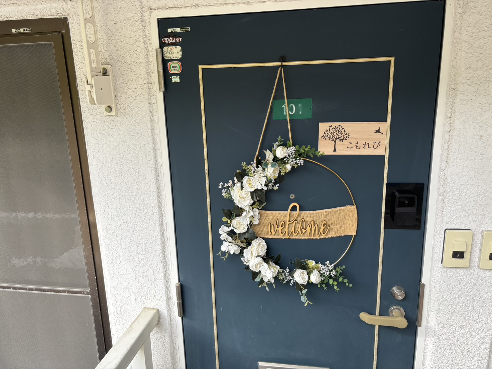
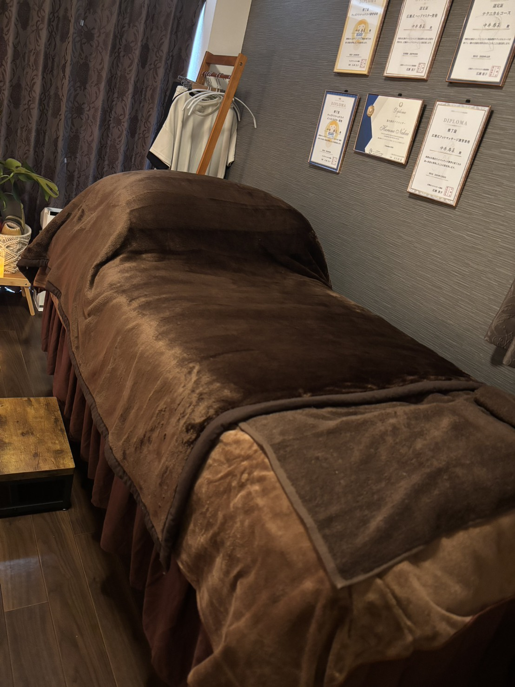
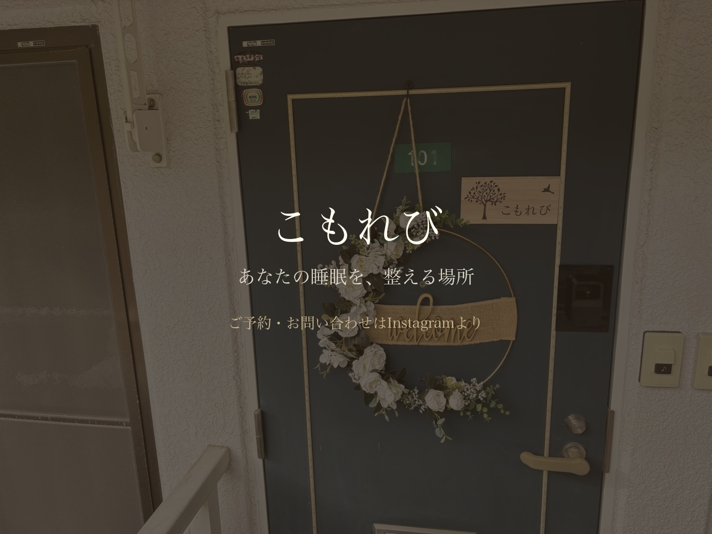

こもれび様 スライドショー v1
動画化前の構成イメージ｜静止画でのご確認用
2026/5/6 ご提案版
📋 動画概要
テーマ：
睡眠改善・体質改善のドライヘッドスパ
タイプ：
実写ベース（提供素材＋AI生成）
尺：
約50秒（5シーン）
構成：
男女2人の before / after を並行表現
テイスト：
清潔感・温かみ・ナチュラル
1
お店の入口
5秒

— 静かに、世界観を開く。
実写素材
中井様ご提供：店舗入口（welcomeリース・こもれびロゴ）
演出メモ：
柔らかいズームイン・木漏れ日のような光のキラメキを足す
2
疲れた男女（2分割）before
10秒
「仕事の疲れが、抜けない…」「朝、起きるのがしんどい…」
中井様参考画像
AI生成
左：40代スーツ姿の疲れた男性 / 右：朝起きれないしんどそうな女性
演出メモ：
色温度を冷たく・暗めに。下向き矢印で「これから良くなる」予感を演出
3
施術シーン（代表の手元のみ）
13秒

そんなあなたに、こもれびのドライヘッドスパ。
リラクゼーションじゃない、睡眠の質を変える体質改善です。
実写素材
中井様ご提供：施術ベッド・ディプロマあり
演出メモ：
このカット＋施術中の手元動画（ご提供素材から）を組み合わせる。代表のお顔は映さず、手と前腕のみ。受け手は気持ちよさそうに目を閉じている表情。
4
施術後の男女（2分割）after
15秒
頭が軽くなる、朝が変わる。
1日のスタートが、明るくなる。
中井様参考画像
AI生成
左：仕事に活き活きと向かう男性 / 右：カーテンを開けて朝陽を浴びる女性
演出メモ：
色温度を温かく・明るく。陽の光が両画面の中央から差し込む演出
5
fin（ロゴ・CTA）
5秒

こもれび。あなたの睡眠を、整える場所。
実写ベース
AI合成
店舗入口写真をベースにロゴ・キャッチコピー・CTAを重ねた終幕カット
演出メモ：
CTA部分（Instagram誘導 / 電話 / 住所等）は中井様にご希望いただいた誘導先を反映予定
💬 中井様にご確認いただきたい点
男女のキャラクターのイメージ
はこの方向性で問題ないか
施術シーンの絵
は、現状の店舗写真をベースにこのまま使ってよいか
シーン5のCTA文言
「ご予約・お問い合わせはInstagramより」で問題ないか（変更可能です）
このまま動画化に進んでよいか